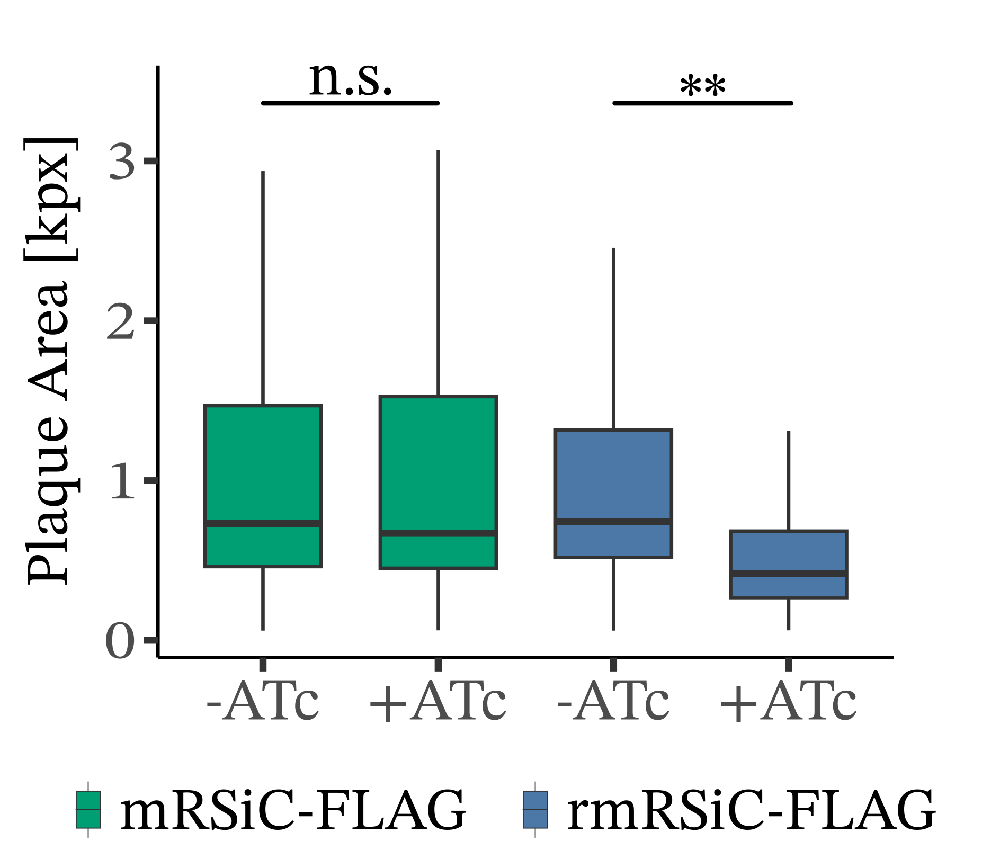
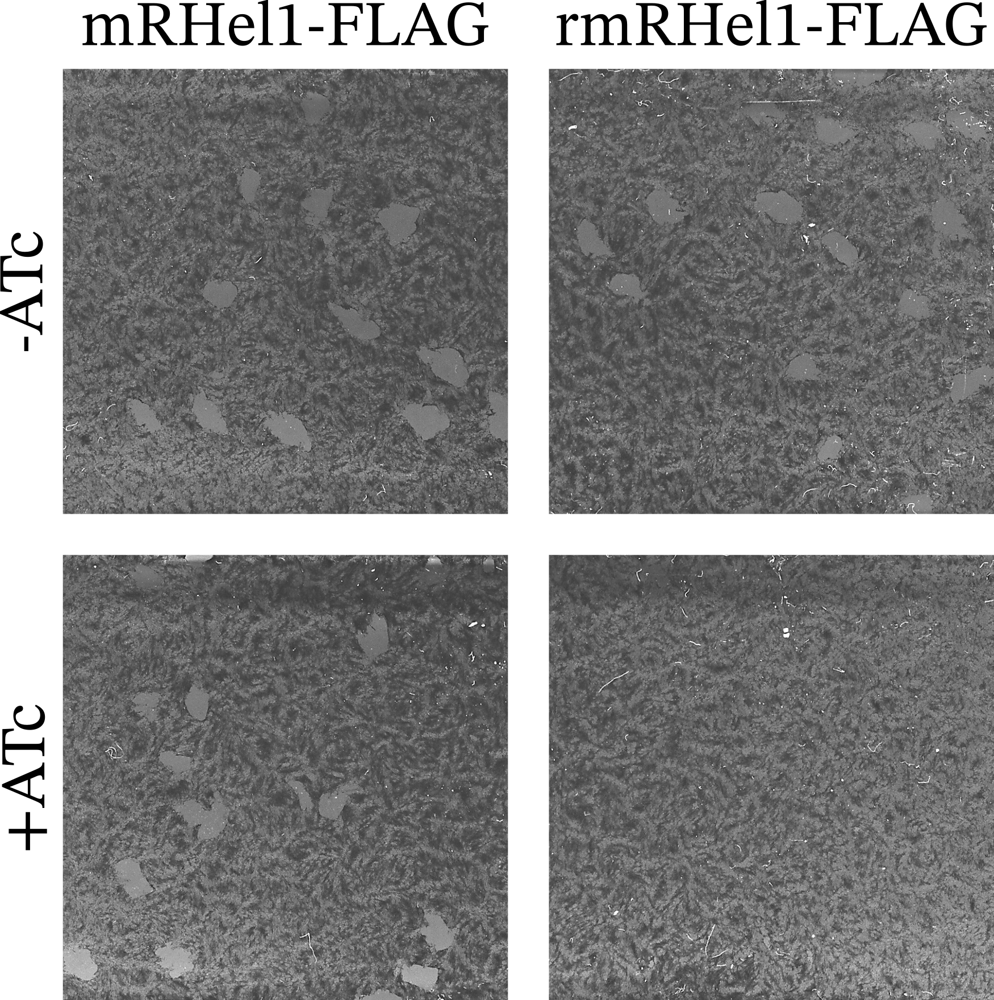
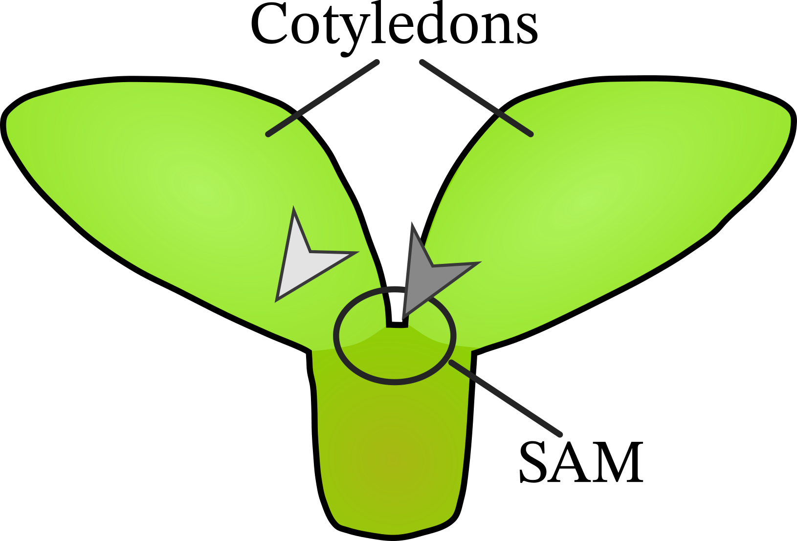
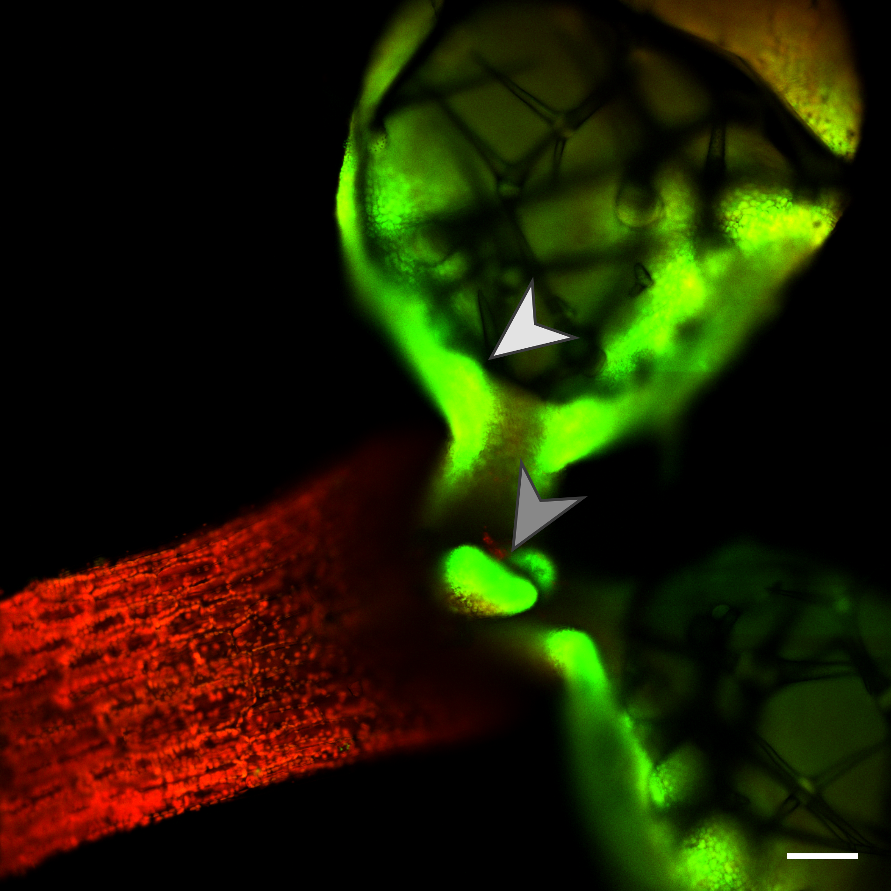

Recovering Biological Inference from Non-Standard RNA-Seq
Mitochondrial sRNA states in Toxoplasma gondii and plastid-associated programs in the Arabidopsis thaliana shoot apex
2026-02-06
Toxo Phenotypes



Nikiforos Drakoulis, BioRxive 2026 Zala Gluhic, unpublished
CP29A Localization



Julia Legen, unpublished
Figure 16 Allclusters